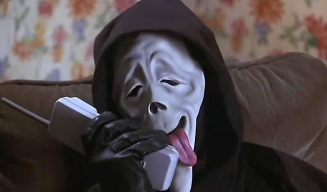

Guia dos melhores Filmes
 Scream
Scream (também conhecida como Scream: The TV Series) é uma série de televisão americana antológica desenvolvida por Jill Blotevogel, Dan Dworkin e Jay Beattie para a MTV e Brett Matthews para a VH1. É baseada na franquia de filmes de terror de mesmo nome, criada por Kevin Williamson e Wes Craven.
Curiosidade:
Durante a produção, a túnica preta de Ghostface seria branca,
para fazê-lo parecer ainda mais um fantasma. Isso mudou por medo de,
para fazê-lo parecer ainda mais um fantasma. Isso mudou por medo de,
que as pessoas comparassem o traje com o que a Ku Klux Klan usa,
Outros Filme: Chuck, JogosMortais